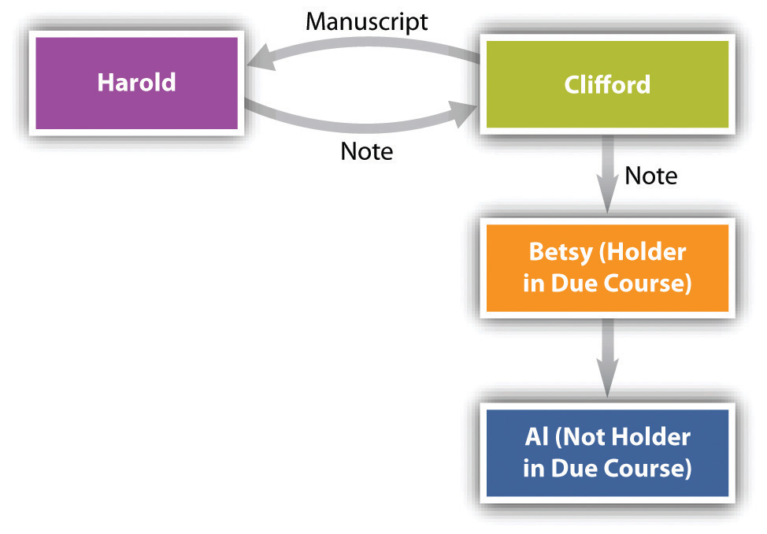

After reading this chapter, you should understand the following:
In this chapter, we consider the final two questions that are raised in determining whether a holder can collect:
A holder is a person in possession of an instrument payable to bearer or to the identified person possessing it. But a holder’s rights are ordinary, as we noted briefly in Chapter 22 "Nature and Form of Commercial Paper". If a person to whom an instrument is negotiated becomes nothing more than a holder, the law of commercial paper would not be very significant, nor would a negotiable instrument be a particularly useful commercial device. A mere holder is simply an assignee, who acquires the assignor’s rights but also his liabilities; an ordinary holder must defend against claims and overcome defenses just as his assignor would. The holder in due course is really the crux of the concept of commercial paper and the key to its success and importance. What the holder in due course gets is an instrument free of claims or defenses by previous possessors. A holder with such a preferred position can then treat the instrument almost as money, free from the worry that someone might show up and prove it defective.
Under Section 3-302 of the Uniform Commercial Code (UCC), to be a holder in due course (HDC), a transferee must fulfill the following:
1. Be a holder of a negotiable instrument;
2. Have taken it:
a) for value,
b) in good faith,
c) without notice
(1) that it is overdue or
(2) has been dishonored (not paid), or
(3) is subject to a valid claim or defense by any party, or
(4) that there is an uncured default with respect to payment of another instrument issued as part of the same series, or
(5) that it contains an unauthorized signature or has been altered, and
3. Have no reason to question its authenticity on account of apparent evidence of forgery, alteration, irregularity or incompleteness.
The point is that the HDC should honestly pay for the instrument and not know of anything wrong with it. If that’s her status, she gets paid on it, almost no matter what.
Again, a holder is a person who possesses a negotiable instrument “payable to bearer or, the case of an instrument payable to an identified person, if the identified person is in possession.”Uniform Commercial Code, Section 1-201(20). An instrument is payable to an identified person if she is the named payee, or if it is indorsed to her. So a holder is one who possesses an instrument and who has all the necessary indorsements.
Section 3-303 of the UCC describes what is meant by transferring an instrument “for value.” In a broad sense, it means the holder has given something for it, which sounds like consideration. But “value” here is not the same as consideration under contract law. Here is the UCC language:
An instrument is issued or transferred for value if any of the following apply:
(1) The instrument is issued or transferred for a promise of performance, to the extent the promise has been performed.
(2) The transferee acquires a security interest or other lien in the instrument other than a lien obtained by judicial proceeding.
(3) The instrument is issued or transferred as payment of, or as security for, an antecedent claim against any person, whether or not the claim is due.
(4) The instrument is issued or transferred in exchange for a negotiable instrument.
(5) The instrument is issued or transferred in exchange for the incurring of an irrevocable obligation to a third party by the person taking the instrument.
1. For a promise, to the extent performed. Suppose A contracts with B: “I’ll buy your car for $5,000.” Under contract law, A has given consideration: the promise is enough. But this executory (not yet performed) promise given by A is not giving “value” to support the HDC status because the promise has not been performed.
Lorna Love sells her car to Paul Purchaser for $5,000, and Purchaser gives her a note in that amount. Love negotiates the note to Rackets, Inc., for a new shipment of tennis rackets to be delivered in thirty days. Rackets never delivers the tennis rackets. Love has a claim for $5,000 against Rackets, which is not an HDC because its promise to deliver is still executory. Assume Paul Purchaser has a defense against Love (a reason why he doesn’t want to pay on the note), perhaps because the car was defective. When Rackets presents the note to Purchaser for payment, he refuses to pay, raising his defense against Love. If Rackets had been an HDC, Purchaser would be obligated to pay on the note regardless of the defense he might have had against Love, the payee. See Carter & Grimsley v. Omni Trading, Inc., Section 24.3 "Cases", regarding value as related to executory contracts.
A taker for value can be a partial HDC if the consideration was only partly performed. Suppose the tennis rackets were to come in two lots, each worth $2,500, and Rackets only delivered one lot. Rackets would be an HDC only to the extent of $2,500, and the debtor—Paul Purchaser—could refuse to pay $2,500 of the promised sum.
The UCC presents two exceptions to the rule that an executory promise is not value. Section 3-303(a)(4) provides that an instrument is issued or transferred for value if the issuer or transferor gives it in exchange for a negotiable instrument, and Section 3-303(5) says an instrument is transferred for value if the issuer gives it in exchange for an irrevocable obligation to a third party.
2. Security interest. Value is not limited to cash or the fulfillment of a contractual obligation. A holder who acquires a lien on, or a security interest in, an instrument other than by legal process has taken for value.
3. Antecedent debt. Likewise, taking an instrument in payment of, or as security for, a prior claim, whether or not the claim is due, is a taking for value. Blackstone owes Webster $1,000, due in thirty days. Blackstone unexpectedly receives a refund check for $1,000 from the Internal Revenue Service and indorses it to Webster. Webster is an HDC though he gave value in the past.
The rationale for the rule of value is that if the holder has not yet given anything of value in exchange for the instrument, he still has an effective remedy should the instrument prove defective: he can rescind the transaction, given the transferor’s breach of warranty.
Section 3-103(4) of the UCC defines good faithDefined in the Uniform Commercial Code as “honesty in fact and the observance of reasonable commercial standards of fair dealing.” as “honesty in fact and the observance of reasonable commercial standards of fair dealing.”
“Honesty in fact” is subjectively tested. Suppose Lorna Love had given Rackets, Inc., a promissory note for the tennis rackets. Knowing that it intended to deliver defective tennis rackets and that Love is likely to protest as soon as the shipment arrives, Rackets offers a deep discount on the note to its fleet mechanic: instead of the $1,000 face value of the note, Rackets will give it to him in payment of an outstanding bill of $400. The mechanic, being naive in commercial dealings, has no suspicion from the large discount that Rackets might be committing fraud. He has acted in good faith under the UCC test. That is not to say that no set of circumstances will ever exist to warrant a finding that there was a lack of good faith.
Whether reasonable commercial standards were observed in the dealings is objectively tested, but buying an instrument at a discount—as was done in the tennis rackets example—is not commercially unreasonable, necessarily.
It obviously would be unjust to permit a holder to enforce an instrument that he knew—when he acquired it—was defective, was subject to claims or defenses, or had been dishonored. A purchaser with knowledge cannot become an HDC. But proving knowledge is difficult, so the UCC at Section 3-302(2) lists several types of notice that presumptively defeat any entitlement to status as HDC. Notice is not limited to receipt of an explicit statement; it includes an inference that a person should have made from the circumstances. The explicit things that give a person notice include those that follow.
The UCC provides generally that a person who has notice that an instrument is overdue cannot be an HDC. What constitutes notice? When an inspection of the instrument itself would show that it was due before the purchaser acquired it, notice is presumed. A transferee to whom a promissory note due April 23 is negotiated on April 24 has notice that it was overdue and consequently is not an HDC. Not all paper contains a due date for the entire amount, and demand paper has no due date at all. In Sections 3-302(a)(2) and 3-304, the UCC sets out specific rules dictating what is overdue paper.
DishonorFailure to pay or refusal to accept a note, a bill, or another commercial obligation. means that instrument is not paid when it is presented to the party who should pay it.
A purchaser of an instrument cannot be an HDC if he has notice that there are any defenses or claims against it. A defense is a reason why the would-be obligor will not pay; a claim is an assertion of ownership in the instrument. If a person is fraudulently induced to issue or make an instrument, he has a claim to its ownership and a defense against paying.
This is pretty clear: a person will fail to achieve the HDC status if he has notice of alteration or an unauthorized signature.
This also is pretty straightforward, though it is worth observing that a holder will flunk the HDC test if she has notice of unauthorized signature or alteration, or if she should have notice on account of apparent irregularity. So a clever forgery would not by itself defeat the HDC status, unless the holder had notice of it.
The payee can be an HDC, but in the usual circumstances, a payee would have knowledge of claims or defenses because the payee would be one of the original parties to the instrument. Nevertheless, a payee may be an HDC if all the prerequisites are met. For instance, Blackstone fraudulently convinces Whitestone into signing a note as a comaker, with Greenstone as the payee. Without authority, Blackstone then delivers the note for value to Greenstone. Having taken the note in good faith, for value, without notice of any problems, and without cause to question its validity because of apparent irregularities, Greenstone is an HDC. In any event, typically the HDC is not the payee of the instrument, but rather, is an immediate or remote transferee of the payee.
There is one last point to mention before we get to the real nub of the holder-in-due-course concept (that the sins of her predecessors are washed away for an HDC). The shelter ruleUnder Article 3 of the Uniform Commercial Code, the transferee of an instrument acquires the same rights his or her transferor had. provides that the transferee of an instrument acquires the same rights that the transferor had. Thus a person who does not himself qualify as an HDC can still acquire that status if some previous holder (someone “upstream”) was an HDC.
On June 1, Clifford sells Harold the original manuscript of Benjamin Franklin’s autobiography. Unknown to Harold, however, the manuscript is a forgery. Harold signs a promissory note payable to Clifford for $250,000 on August 1. Clifford negotiates the note to Betsy on July 1 for $200,000; she is unaware of the fraud. On August 2, Betsy gives the note to Al as a token of her affection. Al is Clifford’s friend and knows about the scam (see Figure 24.1 "The Shelter Rule"). May Al collect?
Figure 24.1 The Shelter Rule
Begin the analysis by noting that Al is not an HDC. Why? For three reasons: he did not take the instrument for value (it was a gift), he did not take in good faith (he knew of the fraud), and he had notice (he acquired it after the due date). Nevertheless, Al is entitled to collect from Harold the full $250,000. His right to do so flows from UCC, Section 3-203(b): “Transfer of an instrument, whether or not the transfer is a negotiation, vests in the transferee any right of the transferor to enforce the instrument, including any right as a holder in due course, but the transferee cannot acquire rights of a holder in due course by a direct or indirect transfer from a holder in due course if the transferee engaged in fraud or illegality affecting the instrument.”
By virtue of the shelter rule, Al as transferee from Betsy acquires all rights that she had as transferor. Clearly Betsy is an HDC: she paid for the instrument, she took it in good faith, had no notice of any claim or defense against the instrument, and there were no apparent irregularities. Since Betsy is an HDC, so is Al. His knowledge of the fraud does not undercut his rights as HDC because he was not a party to it and was not a prior holder. Now suppose that after negotiating the instrument to Betsy, Clifford repurchased it from her. He would not be an HDC—and would not acquire all Betsy’s rights—because he had been a party to fraud and as a prior holder had notice of a defense. The purpose of the shelter rule is “to assure the holder in due course a free market for the paper.”Uniform Commercial Code, Section 3-203, Comment 2.
The holder-in-due-course doctrine is important because it allows the holder of a negotiable instrument to take the paper free from most claims and defenses against it. Without the doctrine, such a holder would be a mere transferee. The UCC provides that to be an HDC, a person must be a holder of paper that is not suspiciously irregular, and she must take it in good faith, for value, and without notice of anything that a reasonable person would recognize as tainting the instrument. A payee may be an HDC but usually would not be (because he would know of problems with it). The shelter rule says that a transferee of an instrument acquires the same rights her transferor had, so a person can have the rights of an HDC without satisfying the requirements of an HDC (provided she does not engage in any fraud or illegality related to the transaction).
We mentioned in Section 24.1 "Holder in Due Course" that the importance of the holder-in-due-course status is that it promotes ready transferability of commercial paper by giving transferees confidence that they can buy and in turn sell negotiable instruments without concern that somebody upstream—previous holders in the chain of distribution—will have some reason not to pay. The holder-in-due-course doctrine makes the paper almost as readily transferable as cash. Almost, but not quite. We examine first the defenses to which the holder in due course (HDC) is not subject and then—the “almost” part—the defenses to which even HDCs are subject.
An HDC is not subject to the obligor’s personal defensesIn negotiable-instrument law, defenses that are not good against a holder in due course.. But a holder who is not an HDC is subject to them: he takes a negotiable instrument subject to the possible personal claims and defenses of numerous people.
In general, the personal defenses—to which the HDC is not subject—are similar to the whole range of defenses for breach of simple contract: lack of consideration; failure of consideration; duress, undue influence, and misrepresentation that does not render the transaction void; breach of warranty; unauthorized completion of an incomplete instrument; prior payment. Incapacity that does not render the transaction void (except infancy) is also a personal defense. As the Uniform Commercial Code (UCC) puts it, this includes “mental incompetence, guardianship, ultra vires acts or lack of corporate capacity to do business, or any other incapacity apart from infancy. If under the state law the effect is to render the obligation of the instrument entirely null and void, the defense may be asserted against a holder in due course. If the effect is merely to render the obligation voidable at the election of the obligor, the defense is cut off.”Uniform Commercial Code, Section 3-305, Comment 1. James White and Robert Summers, in their hornbook on the UCC, opine that unconscionability is almost always a personal defense, not assertable against an HDC.James White and Robert Summers, Uniform Commercial Code, 2/e, 575 (1980). But again, the HDC takes free only from personal defenses of parties with whom she has not dealt. So while the payee of a note can be an HDC, if he dealt with the maker, he is subject to the maker’s defenses.
An HDC in a nonconsumer transaction is not subject to personal defenses, but he is subject to the so-called real defensesIn negotiable-instrument law, defenses that are good against a holder in due course. (or “universal defenses”)—they are good against an HDC.
The real defenses good against any holder, including HDCs, are as follows (see Figure 24.2 "Real Defenses"):
Figure 24.2 Real Defenses

Though most of these concepts are pretty clear, a few comments by way of analysis are appropriate.
Forgery is a real defense to an action by an HDC. As we have noted, though, negligence in the making or handling of a negotiable instrument may cut off this defense against an HDC—as, for example, when a drawer who uses a rubber signature stamp carelessly leaves it unattended. And notice, too, that Section 3-308 of the UCC provides that signatures are presumed valid unless their validity is specifically denied, at which time the burden shifts to the person claiming validity. These issues are discussed in Triffin v. Somerset Valley Bank, in Section 24.3 "Cases" of this chapter.
Drawers, makers, and subsequent indorsers are not liable to an HDC if they have been discharged in bankruptcy. If they were, bankruptcy would not serve much purpose.
Whether an infant’s signature on a negotiable instrument is a valid defense depends on the law of the state. In some states, for instance, an infant who misrepresents his age is estopped from asserting infancy as a defense to a breach of contract. In those states, infancy would not be available as a defense against the effort of an HDC to collect.
Under Section 3-407 of the UCC, “fraudulent alteration” means either (1) an unauthorized change in an instrument that purports to modify in any respect the obligation of a party or (2) an unauthorized addition of words or numbers or other change to an incomplete instrument relating to the obligation of a party. An alteration fraudulently made discharges a party whose obligation is affected by the alteration unless that party assents or is precluded from asserting the alteration. But a nonfraudulent alteration—for example, filling in an omitted date or giving the obligor the benefit of a lower interest rate—does not discharge the obligor. In any case, the person paying or taking the instrument may pay or collect “according to its original terms, or in the case of an incomplete instrument that is altered by unauthorized completion, according to its terms as completed. If blanks are filled or an incomplete instrument is otherwise completed, subsection (c) places the loss upon the party who left the instrument incomplete by permitting enforcement in its completed form. This result is intended even though the instrument was stolen from the issuer and completed after the theft.” A moral here: don’t leave instruments lying around with blanks that could be filled in.
A void contract is distinguished from a voidable contract; only the former is a real defense.
You may recall that this is the rather unusual situation in which a person is tricked into signing a document. Able holds out a piece of paper for her boss and points to the signature line, saying, “This is a receipt for goods we received a little while ago.” Baker signs it. It is not a receipt; it’s the signature line on a promissory note. Able has committed fraud in the execution, and the note is void.
If the holder knows that the paper—a note, say—has already been paid, she cannot enforce it. That’s a good reason to take back any note you have made from the person who presents it to you for payment.
The holder-in-due-course doctrine often worked considerable hardship on the consumer, usually as the maker of an installment note.
For example, a number of students are approached by a gym owner who induces them to sign one-year promissory notes for $150 for a one-year gym membership. The owner says, “I know that right now the equipment in the gym is pretty rudimentary, but then, too, $150 is about half what you’d pay at the YMCA or Gold’s Gym. And the thing is, as we get more customers signing up, we’re going to use the money to invest in new equipment. So within several months we’ll have a fully equipped facility for your use.” Several students sign the notes, which the owner sells to a factorOne that lends money to another, taking back a negotiable instrument as security. (one that lends money to another, taking back a negotiable instrument as security, usually at about a 20 percent discount). The factor takes as an apparent HDC, but the gym idea doesn’t work and the owner declares bankruptcy. If this were a commercial transaction, the makers (the students) would still owe on the notes even if there was, as here, a complete failure of consideration (called “paying on a dead horse”). But the students don’t have to pay.
Whether the gym owner here committed fraud is uncertain, but the holder-in-due-course doctrine did often work to promote fraud. Courts frequently saw cases brought by credit companies (factors) against consumers who bought machines that did not work and services that did not live up to their promises. The ancient concept of an HDC did not square with the realities of modern commerce, in which instruments by the millions are negotiated for uncompleted transactions. The finance company that bought such commercial paper could never have honestly claimed (in the sociological sense) to be wholly ignorant that many makers will have claims against their payees (though they could and did make the claim in the legal sense).
Acting to curb abuses, the Federal Trade Commission (FTC) in 1976 promulgated a trade regulation rule that in effect abolished the holder-in-due-course rule for consumer credit transactions. Under the FTC rule titled “Preservation of Consumers’ Claims and Defenses,”16 Code of Federal Regulations, Section 433. the creditor becomes a mere holder and stands in the shoes of the seller, subject to all claims and defenses that the debtor could assert against the seller. Specifically, the rule requires the seller to provide notice in any consumer credit contract that the debtor is entitled to raise defenses against any subsequent purchaser of the paper. It also bars the seller from accepting any outside financing unless the loan contract between the consumer and the outside finance company contains a similar notice. (The required notice, to be printed in no less than ten-point, boldface type, is set out in Figure 24.3 "Notice of Defense".) The effect of the rule is to ensure that a consumer’s claim against the seller will not be defeated by a transfer of the paper. The FTC rule has this effect because the paragraph to be inserted in the consumer credit contract gives the holder notice sufficient to prevent him from becoming an HDC.
The rule applies only to consumer credit transactions. A consumer transactionA transaction in which an individual incurs an obligation primarily for personal, family, or household purposes. is defined as a purchase of goods or services by a natural person, not a corporation or partnership, for personal, family, or household use from a seller in the ordinary course of business.Uniform Commercial Code, Section 2-201(11). Purchases of goods or services for commercial purposes and purchases of interests in real property, commodities, or securities are not affected. The rule applies to any credit extended by the seller himself (except for credit card transactions) or to any “purchase money loan.” This type of loan is defined as a cash advance to the consumer applied in whole or substantial part to a purchase of goods or services from a seller who either (a) refers consumers to the creditor or (b) is affiliated with the creditor. The purpose of this definition is to prevent the seller from making an end run around the rule by arranging a loan for the consumer through an outside finance company. The rule does not apply to a loan that the consumer arranges with an independent finance company entirely on his own.
The net effect of the FTC rule is this: the holder-in-due-course doctrine is virtually dead in consumer credit contracts. It remains alive and flourishing as a legal doctrine in all other business transactions.
Figure 24.3 Notice of Defense

The privileged position of the HDC stands up against the so-called personal defenses, which are—more or less—the same as typical defenses to obligation on any contract, not including, however, the real defenses. Real defenses are good against any holder, including an HDC. These are infancy, void obligations, fraud in the execution, bankruptcy, discharge of which holder has notice, unauthorized signatures, and fraudulent alterations. While a payee may be an HDC, his or her rights as such are limited to avoiding defenses of persons the payee did not deal with. The shelter rule says that the transferee of an instrument takes the same rights that the transferor had. The Federal Trade Commission has abrogated the holder-in-due-course doctrine for consumer transactions.
Carter & Grimsley v. Omni Trading, Inc.
716 N.E.2d 320 (Ill. App. 1999)
Lytton, J.
Omni purchased some grain from Country Grain, and on February 2, 1996, it issued two checks, totaling $75,000, to Country Grain. Country Grain, in turn, endorsed the checks over to Carter as a retainer for future legal services. Carter deposited the checks on February 5; Country Grain failed the next day. On February 8, Carter was notified that Omni had stopped payment on the checks. Carter subsequently filed a complaint against Omni…alleging that it was entitled to the proceeds of the checks, plus pre-judgment interest, as a holder in due course.…[Carter moved for summary judgment; the motion was denied.]
Carter argues that its motion for summary judgment should have been granted because, as a holder in due course, it has the right to recover on the checks from the drawer, Omni.
The Illinois Uniform Commercial Code (UCC) defines a holder in due course as:
“the holder of an instrument if:
(1) the instrument when issued does not bear such apparent evidence of forgery or alteration or is not otherwise so irregular or incomplete as to call into question its authenticity, and (2) the holder took the instrument (i) for value,…
Section 3-303(a) of the UCC also states that:
(a) “An instrument is issued or transferred for value if: (1) the instrument is issued or transferred for a promise of performance, to the extent that the promise has been performed * * *.” (emphasis added)
Carter contends that in Illinois a contract for future legal services should be treated differently than other executory contracts. It contends that when the attorney-client relationship is created by payment of a fee or retainer, the contract is no longer executory. Thus, Carter would achieve holder in due course status. We are not persuaded.
A retainer is the act of a client employing an attorney; it also denotes the fee paid by the client when he retains the attorney to act for him. [Citation] We have found no Illinois cases construing section 3-303(a) as it relates to a promise to perform future legal services under a retainer. The general rule, however, is that “an executory promise is not value.” [Citation] “[T]he promise does not rise to the level of ‘value’ in the commercial paper market until it is actually performed.” [Citation]
The UCC comment to section 303 gives the following example:
“Case # 2. X issues a check to Y in consideration of Y’s promise to perform services in the future. Although the executory promise is consideration for issuance of the check it is value only to the extent the promise is performed.
We have found no exceptions to these principles for retainers. Indeed, courts in other jurisdictions interpreting similar language under section 3-303 have held that attorneys may be holders in due course only to the extent that they have actually performed legal services prior to acquiring a negotiable instrument. See [Citations: Pennsylvania, Florida, Massachusetts]. We agree.
This retainer was a contract for future legal services. Under section 3-303(a)(1), it was a “promise of performance,” not yet performed. Thus, no value was received, and Carter is not a holder in due course.
Furthermore, in this case, no evidence was presented in the trial court that Carter performed any legal services for Country Grain prior to receiving the checks. Without an evidentiary basis for finding that Carter received the checks for services performed, the trial court correctly found that Carter failed to prove that it was a holder in due course. [Citations]
Because we have decided that Carter did not take the checks for value under section 3-303(a) of the UCC, we need not address its other arguments.
The judgment of the circuit court of Peoria County is affirmed.
Holdridge, J., dissenting.
I respectfully dissent. In a contractual relationship between attorney and client, the payment of a fee or retainer creates the relationship, and once that relationship is created the contract is no longer executory. [Citation] Carter’s agreement to enter into an attorney-client relationship with Country Grain was the value exchanged for the checks endorsed over to the firm. Thus, the general rule cited by the majority that “an executory promise is not value” does not apply to the case at bar. On that basis I would hold that the trial court erred in determining that Carter was not entitled to the check proceeds and I therefore dissent.
Buckeye Check Cashing, Inc. v. Camp
825 N.E.2d 644 (Ohio App. 2005)
Donovan, J.
Defendant-appellant Shawn Sheth appeals from a judgment of the Xenia Municipal Court in favor of plaintiff-appellee Buckeye Check Cashing, Inc. (“Buckeye”). Sheth contends that the trial court erred in finding that Buckeye was a holder in due course of a postdated check drawn by Sheth and therefore was entitled to payment on the instrument despite the fact that Sheth had issued a stop-payment order to his bank.
In support of this assertion, Sheth argues that the trial court did not use the correct legal standard in granting holder-in-due-course status to Buckeye. In particular, Sheth asserts that the trial court used the pre-1990 Uniform Commercial Code (“UCC”) definition of “good faith” as it pertains to holder-in-due-course status, which defined it as “honesty in fact.” The definition of “good faith” was extended by the authors of the UCC in 1990 to also mean “the observance of reasonable commercial standards of fair dealing.” The post-1990 definition was adopted by the Ohio legislature in 1994.
Sheth argues that while Buckeye would prevail under the pre-1990, “honesty in fact” definition of “good faith,” it failed to act in a commercially reasonable manner when it chose to cash the postdated check drawn by Sheth. The lower court…adjudged Buckeye to be a holder in due course and, therefore, entitled to payment. We conclude that the trial court used the incorrect “good faith” standard when it granted holder-in-due-course status to Buckeye because Buckeye did not act in a commercially reasonable manner when it cashed the postdated check drawn by Sheth. Because we accept Sheth’s sole assignment of error, the judgment of the trial court is reversed.
On or about October 12, 2003, Sheth entered into negotiations with James A. Camp for Camp to provide certain services to Sheth by October 15, 2003. To that end, Sheth issued Camp a check for $1,300. The check was postdated to October 15, 2003.
On October 13, 2003, Camp negotiated the check to Buckeye and received a payment of $1,261.31. Apparently fearing that Camp did not intend to fulfill his end of the contract, Sheth contacted his bank on October 14, 2003, and issued a stop-payment order on the check. Unaware of the stop-payment order, Buckeye deposited the check with its own bank on October 14, 2003, believing that the check would reach Sheth’s bank by October 15, 2003. Because the stop-payment order was in effect, the check was ultimately dishonored by Sheth’s bank. After an unsuccessful attempt to obtain payment directly from Sheth, Buckeye brought suit.
Sheth’s sole assignment of error is as follows:
“The trial court erred by applying the incorrect legal standard in granting holder in due course status to the plaintiff-appellee because the plaintiff-appellee failed to follow commercially reasonable standards in electing to cash the check that gives rise to this dispute.”
[UCC 3-302] outlines the elements required to receive holder-in-due-course status. The statute states:
…‘holder in due course’ means the holder of an instrument if both of the following apply:
“(1) The instrument when issued or negotiated to the holder does not bear evidence of forgery or alteration that is so apparent, or is otherwise so irregular or incomplete as to call into question its authenticity;
“(2) The holder took the instrument under all of the following circumstances:
(a) For value;
(b) In good faith;
(c) Without notice that the instrument is overdue or has been dishonored or that there is an uncured default with respect to payment of another instrument issued as part of the same series;
(d) Without notice that the instrument contains an unauthorized signature or has been altered;
(e) Without notice of any claim to the instrument as described in [3-306];
(f) Without notice that any party has a defense or claim in recoupment described in [UCC 3-305(a); emphasis added].
At issue in the instant appeal is whether Buckeye acted in “good faith” when it chose to honor the postdated check originally drawn by Sheth.…UCC 1-201, defines “good faith” as “honesty in fact and the observance of reasonable commercial standards of fair dealing.” Before the Ohio legislature amended UCC 1-201 in 1994, that section did not define “good faith”; the definition of “good faith” as “honesty in fact” in UCC 1-201 was the definition that applied[.]…
“Honesty in fact” is defined as the absence of bad faith or dishonesty with respect to a party’s conduct within a commercial transaction. [Citation] Under that standard, absent fraudulent behavior, an otherwise innocent party was assumed to have acted in good faith. The “honesty in fact” requirement, also known as the “pure heart and empty head” doctrine, is a subjective test under which a holder had to subjectively believe he was negotiating an instrument in good faith for him to become a holder in due course. Maine [Citation, 1999].
In 1994, however, the Ohio legislature amended the definition of “good faith” to include not only the subjective “honesty in fact” test, but also an objective test: “the observance of reasonable commercial standards of fair dealing.” Ohio UCC 1-201(20). A holder in due course must now satisfy both a subjective and an objective test of good faith. What constitutes “reasonable commercial standards of fair dealing” for parties claiming holder-in-due-course status, however, has not heretofore been defined in the state of Ohio.
In support of his contention that Buckeye is not a holder in due course, Sheth cites a decision from the Supreme Court of Maine, [referred to above] in which the court provided clarification with respect to the objective prong of the “good faith” analysis:
“The fact finder must therefore determine, first, whether the conduct of the holder comported with industry or ‘commercial’ standards applicable to the transaction and second, whether those standards were reasonable standards intended to result in fair dealing. Each of those determinations must be made in the context of the specific transaction at hand. If the fact finder’s conclusion on each point is ‘yes,’ the holder will be determined to have acted in good faith even if, in the individual transaction at issue, the result appears unreasonable. Thus, a holder may be accorded holder in due course where it acts pursuant to those reasonable commercial standards of fair dealing—even if it is negligent—but may lose that status, even where it complies with commercial standards, if those standards are not reasonably related to achieving fair dealing.” [Citation]
Check cashing is an unlicensed and unregulated business in Ohio. [Citation] Thus, there are no concrete commercial standards by which check-cashing businesses must operate. Moreover, Buckeye argues that its own internal operating policies do not require that it verify the availability of funds, nor does Buckeye apparently have any guidelines with respect to the acceptance of postdated checks. Buckeye asserts that cashing a postdated check does not prevent a holder from obtaining holder-in-due-course status and cites several cases in support of this contention. All of the cases cited by Buckeye, however, were decided prior to the UCC’s addition of the objective prong to the definition of “good faith.”
Under a purely subjective “honesty in fact” analysis, it is clear that Buckeye accepted the check from Camp in good faith and would therefore achieve holder-in-due-course status. When the objective prong of the good faith test is applied, however, we find that Buckeye did not conduct itself in a commercially reasonable manner. While not going so far as to say that cashing a postdated check prevents a holder from obtaining holder-in-due-course status in every instance, the presentation of a postdated check should put the check cashing entity on notice that the check might not be good. Buckeye accepted the postdated check at its own peril. Some attempt at verification should be made before a check-cashing business cashes a postdated check. Such a failure to act does not constitute taking an instrument in good faith under the current objective test of “reasonable commercial standards” enunciated in [the UCC].
We conclude that in deciding to amend the good faith requirement to include an objective component of “reasonable commercial standards,” the Ohio legislature intended to place a duty on the holders of certain instruments to act in a responsible manner in order to obtain holder-in-due-course status. When Buckeye decided to cash the postdated check presented by Camp, it did so without making any attempt to verify its validity. This court in no way seeks to curtail the free negotiability of commercial instruments. However, the nature of certain instruments, such as the postdated check in this case, renders it necessary for appellee Buckeye to take minimal steps to protect its interests. That was not done. Buckeye was put on notice that the check was not good until October 15, 2003. “Good faith,” as it is defined in the UCC and the Ohio Revised Code, requires that a holder demonstrate not only honesty in fact but also that the holder act in a commercially reasonable manner. Without taking any steps to discover whether the postdated check issued by Sheth was valid, Buckeye failed to act in a commercially reasonable manner and therefore was not a holder in due course.
Based upon the foregoing, Sheth’s single assignment of error is sustained, the judgment of the Xenia Municipal Court is reversed, and this matter is remanded to that court for further proceedings in accordance with law and consistent with this opinion.
Judgment reversed, and cause remanded.
Triffin v. Somerset Valley Bank
777 A.2d 993 (N.J. Ct. App. 2001)
Cuff, J.
This case concerns the enforceability of dishonored checks against the issuer of the checks under Article 3 of the Uniform Commercial Code (UCC), as implemented in New Jersey[.]
Plaintiff [Robert J. Triffin] purchased, through assignment agreements with check cashing companies, eighteen dishonored checks, issued by defendant Hauser Contracting Company (Hauser Co.). Plaintiff then filed suit…to enforce Hauser Co.’s liability on the checks. The trial court granted plaintiff’s motion for summary judgment. Hauser Co. appeals the grant of summary judgment.…We affirm.
In October 1998, Alfred M. Hauser, president of Hauser Co., was notified by Edwards Food Store in Raritan and the Somerset Valley Bank (the Bank), that several individuals were cashing what appeared to be Hauser Co. payroll checks. Mr. Hauser reviewed the checks, ascertained that the checks were counterfeits and contacted the Raritan Borough and Hillsborough Police Departments. Mr. Hauser concluded that the checks were counterfeits because none of the payees were employees of Hauser Co., and because he did not write the checks or authorize anyone to sign those checks on his behalf. At that time, Hauser Co. employed Automatic Data Processing, Inc. (ADP) to provide payroll services and a facsimile signature was utilized on all Hauser Co. payroll checks.
Mr. Hauser executed affidavits of stolen and forged checks at the Bank, stopping payment on the checks at issue. Subsequently, the Bank received more than eighty similar checks valued at $25,000 all drawn on Hauser Co.’s account.
Plaintiff is in the business of purchasing dishonored negotiable instruments. In February and March 1999, plaintiff purchased eighteen dishonored checks from four different check cashing agencies, specifying Hauser Co. as the drawer. The checks totaled $8,826.42. Pursuant to assignment agreements executed by plaintiff, each agency stated that it cashed the checks for value, in good faith, without notice of any claims or defenses to the checks, without knowledge that any of the signatures were unauthorized or forged, and with the expectation that the checks would be paid upon presentment to the bank upon which the checks were drawn. All eighteen checks bore a red and green facsimile drawer’s signature stamp in the name of Alfred M. Hauser. All eighteen checks were marked by the Bank as “stolen check” and stamped with the warning, “do not present again.”…
Plaintiff then filed this action against the Bank, Hauser Co.,…Plaintiff contended that Hauser Co. was negligent in failing to safeguard both its payroll checks and its authorized drawer’s facsimile stamp, and was liable for payment of the checks.
The trial court granted plaintiff’s summary judgment motion, concluding that no genuine issue of fact existed as to the authenticity of the eighteen checks at issue. Judge Hoens concluded that because the check cashing companies took the checks in good faith, plaintiff was a holder in due course as assignee. Judge Hoens also found that because the checks appeared to be genuine, Hauser Co. was required, but had failed, to show that plaintiff’s assignor had any notice that the checks were not validly drawn.…
Hauser Co. argues that summary judgment was improperly granted because the court failed to properly address Hauser Co.’s defense that the checks at issue were invalid negotiable instruments and therefore erred in finding plaintiff was a holder in due course.
As a threshold matter, it is evident that the eighteen checks meet the definition of a negotiable instrument [UCC 3-104]. Each check is payable to a bearer for a fixed amount, on demand, and does not state any other undertaking by the person promising payment, aside from the payment of money. In addition, each check appears to have been signed by Mr. Hauser, through the use of a facsimile stamp, permitted by the UCC to take the place of a manual signature. [Section 3-401(b) of the UCC] provides that a “signature may be made manually or by means of a device or machine…with present intention to authenticate a writing.” It is uncontroverted by Hauser Co. that the facsimile signature stamp on the checks is identical to Hauser Co.’s authorized stamp.
Hauser Co., however, contends that the checks are not negotiable instruments because Mr. Hauser did not sign the checks, did not authorize their signing, and its payroll service, ADP, did not produce the checks. Lack of authorization, however, is a separate issue from whether the checks are negotiable instruments. Consequently, given that the checks are negotiable instruments, the next issue is whether the checks are unenforceable by a holder in due course, because the signature on the checks was forged or unauthorized.
[Sections 3-203 and 3-302 of the UCC] discuss the rights of a holder in due course and the rights of a transferee of a holder in due course. Section 3-302 establishes that a person is a holder in due course if:
(1) the instrument when issued or negotiated to the holder does not bear such apparent evidence of forgery or alteration or is not otherwise so irregular or incomplete as to call into question its authenticity; and
(2) the holder took the instrument for value, in good faith, without notice that the instrument is overdue or has been dishonored or that there is an uncured default with respect to payment of another instrument issued as part of the same series, without notice that the instrument contains an unauthorized signature or has been altered, without notice of any claim to the instrument described in 3-306, and without notice that any party has a defense or claim in recoupment described in subsection a. of 3-305.
Section 3-203 deals with transfer of instruments and provides:
a. An instrument is transferred when it is delivered by a person other than its issuer for the purpose of giving to the person receiving delivery the right to enforce the instrument.
b. Transfer of an instrument, whether or not the transfer is a negotiation, vests in the transferee any right of the transferor to enforce the instrument, including any right as a holder in due course, but the transferee cannot acquire rights of a holder in due course by a transfer, directly or indirectly, from a holder in due course if the transferee engaged in fraud or illegality affecting the instrument.…
Under subsection (b) a holder in due course that transfers an instrument transfers those rights as a holder in due course to the purchaser. The policy is to assure the holder in due course a free market for the instrument.
The record indicates that plaintiff has complied with the requirements of both sections 3-302 and 3-203. Each of the check cashing companies from whom plaintiff purchased the dishonored checks were holders in due course. In support of his summary judgment motion, plaintiff submitted an affidavit from each company; each company swore that it cashed the checks for value, in good faith, without notice of any claims or defenses by any party, without knowledge that any of the signatures on the checks were unauthorized or fraudulent, and with the expectation that the checks would be paid upon their presentment to the bank upon which the checks were drawn. Hauser Co. does not dispute any of the facts sworn to by the check cashing companies.
The checks were then transferred to plaintiff in accordance with section 3-303, vesting plaintiff with holder in due course status. Each company swore that it assigned the checks to plaintiff in exchange for consideration received from plaintiff. Plaintiff thus acquired the check cashing companies’ holder in due course status when the checks were assigned to plaintiff. Moreover, pursuant to section 3-403(a)’s requirement that the transfer must have been made for the purpose of giving the transferee the right to enforce the instrument, the assignment agreements expressly provided plaintiff with that right, stating that “all payments [assignor] may receive from any of the referenced Debtors…shall be the exclusive property of [assignee].” Again, Hauser Co. does not dispute any facts relating to the assignment of the checks to plaintiff.
Hauser Co. contends, instead, that the checks are per se invalid because they were fraudulent and unauthorized. Presumably, this argument is predicated on section 3-302. This section states a person is not a holder in due course if the instrument bears “apparent evidence of forgery or alteration” or is otherwise “so irregular or incomplete as to call into question its authenticity.”
In order to preclude liability from a holder in due course under section 3-302, it must be apparent on the face of the instrument that it is fraudulent. The trial court specifically found that Hauser Co. had provided no such evidence, stating that Hauser Co. had failed to show that there was anything about the appearance of the checks to place the check cashing company on notice that any check was not valid. Specifically, with respect to Hauser Co.’s facsimile signature on the checks, the court stated that the signature was identical to Hauser Co.’s authorized facsimile signature. Moreover, each of the check cashing companies certified that they had no knowledge that the signatures on the checks were fraudulent or that there were any claims or defenses to enforcement of the checks. Hence, the trial court’s conclusion that there was no apparent evidence of invalidity was not an abuse of discretion and was based on a reasonable reading of the record.
To be sure, section 3-308(a) does shift the burden of establishing the validity of the signature to the plaintiff, but only if the defendant specifically denies the signature’s validity in the pleadings. The section states:
In an action with respect to an instrument, the authenticity of, and authority to make, each signature on the instrument is admitted unless specifically denied in the pleadings. If the validity of a signature is denied in the pleadings, the burden of establishing validity is on the person claiming validity, but the signature is presumed to be authentic and authorized unless the action is to enforce the liability of the purported signer and the signer is dead or incompetent at the time of trial of the issue of validity of the signature.
Examination of the pleadings reveals that Hauser Co. did not specifically deny the factual assertions in plaintiff’s complaint.
Hence, the trial court’s conclusion that there was no apparent evidence of invalidity was not an abuse of discretion and was based on a reasonable reading of the record.
In conclusion, we hold that Judge Hoens properly granted summary judgment. There was no issue of material fact as to: (1) the status of the checks as negotiable instruments; (2) the status of the check cashing companies as holders in due course; (3) the status of plaintiff as a holder in due course; and (4) the lack of apparent evidence on the face of the checks that they were forged, altered or otherwise irregular. Moreover, Hauser Co.’s failure to submit some factual evidence indicating that the facsimile signature was forged or otherwise unauthorized left unchallenged the UCC’s rebuttable presumption that a signature on an instrument is valid. Consequently, the trial court properly held, as a matter of law, that plaintiff was a holder in due course and entitled to enforce the checks. Affirmed.
Authors’ comment: How this scam unfolded is suggested in the following segment of an online guide to reducing financial transaction fraud.
Recommendations: It is clear from this case that if a thief can get check stock that looks genuine, your company can be held liable for losses that may occur from those counterfeit checks. Most companies buy check stock from vendors that sell the identical check stock entirely blank to other companies, totally uncontrolled, thus aiding the forgers. Many companies opt for these checks because they are less expensive than controlled, high security checks (excluding legal fees and holder in due course judgments). Forgers buy the check stock, and using a $99 scanner and Adobe Illustrator, create counterfeit checks that cannot be distinguished from the account holder’s original checks. This is how legal exposure to a holder in due course claim can be and is created. Companies should use checks uniquely designed and manufactured for them, or buy from vendors such as SAFEChecks (http://www.safechecks.com) that customize every company’s check and never sells check stock entirely blank without it first being customized for the end user.Frank Abagnale and Greg Litster, Holder in Due Course and Check Fraud, TransactionDirectory.com.
A holder is a holder in due course (HDC) if he takes the instrument without reason to question its authenticity on account of obvious facial irregularities, for value, in good faith, and without notice that it is overdue or has been dishonored, or that it contains a forgery or alteration, or that that any person has any defense against it or claim to it. The HDC takes the paper free of most defenses; an ordinary holder takes the paper as an assignee, acquiring only the rights of the assignor.
Value is not the same as consideration; hence, a promise will not satisfy this criterion until it has been performed. The HDC must have given something of value other than a promise to give.
Good faith means (1) honesty in fact in the conduct or transaction concerned and (2) the observance of reasonable commercial standards of fair dealing. Honesty in fact is a subjective test, but the observance of reasonable commercial standards is objective.
Notice is not limited to receipt of an explicit statement of defenses; a holder may be given notice through inferences that should be drawn from the character of the instrument. Thus an incomplete instrument, one that bears marks of forgery, or one that indicates it is overdue may give notice on its face. Certain facts do not necessarily give notice of defense or claim: that the instrument is antedated or postdated, that the instrument was negotiated in return for an executory promise, that any party has signed for accommodation, that an incomplete instrument has been completed, that any person negotiating the instrument is or was a fiduciary, or that there has been default in payment of interest or principal.
A person who could not have become an HDC directly (e.g., because he had notice of a defense or claim) may become so if he takes as transferee from an HDC as long as he was not a party to any fraud or illegality affecting the instrument or had not previously been a holder with notice of a defense or claim. This is the shelter rule.
Holders in due course are not immune from all defenses. A real, as opposed to a personal, defense may be asserted against the HDC. Personal defenses include fraud in the inducement, failure of consideration, nonperformance of a condition precedent, and the like. Real defenses consist of infancy, acts that would make a contract void (such as duress), fraud in the execution, forgery, and discharge in bankruptcy. A 1976 trade regulation rule of the Federal Trade Commission abolishes the holder-in-due-course rule for consumer transactions.
Benson purchased a double-paned, gas-filled picture window for his house from Wonder Window, making a $200 deposit and signing an installment contract, which is here set out in its entirety:
October 3, 2012
I promise to pay to Wonder Window or order the sum of $1,000 in five equal installments of $200.
[Signed] Benson
Wonder Window negotiated the installment contract to Devon, who took the instrument for value, in good faith, without notice of any claim or defense of any party, and without question of the instrument’s authenticity. After Benson made three payments, the window fogged up inside and was unacceptable. Benson wants his money back from Wonder Window, and he wants to discontinue further payments. Can he do that? Explain.
Which defeats a person from being an HDC?
Personal defenses are
Fraud in the inducement is a ________________ defense.
A person would not be an HDC if she
Rock Industries agreed to sell Contractor gravel to repair an airport drain field. Contractor was uncertain how many loads of gravel would be needed, so he drew a check made out to “Rock Industries” as the payee but left the amount blank, to be filled in on the job site when the last load of gravel was delivered. Five truckloads, each carrying ten tons of gravel, were required, with gravel priced at $20 per ton. Thus Contractor figured he’d pay for fifty tons, or $1,000, but Rock Industries had apparently filled in the amount as $1,400 and negotiated it to Fairchild Truck Repair. Fairchild took it in good faith for an antecedent debt. Contractor will